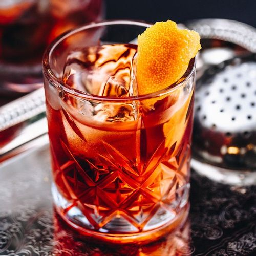
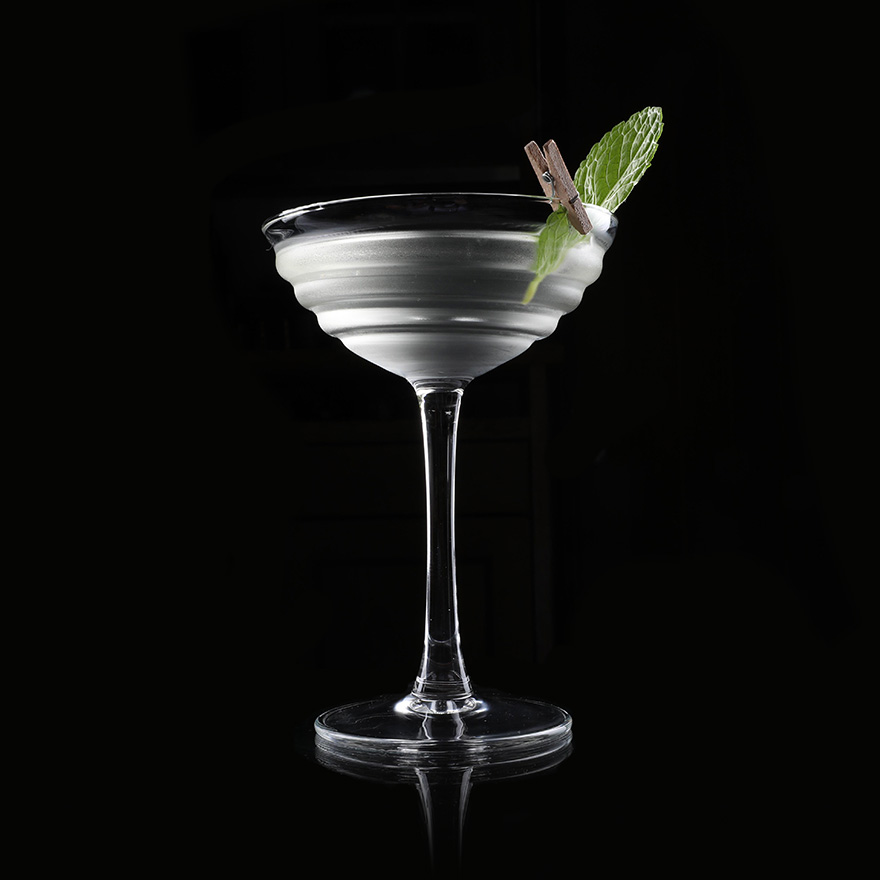
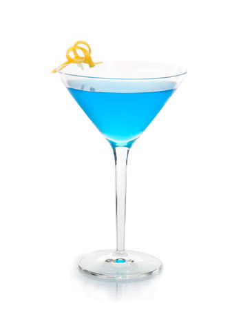
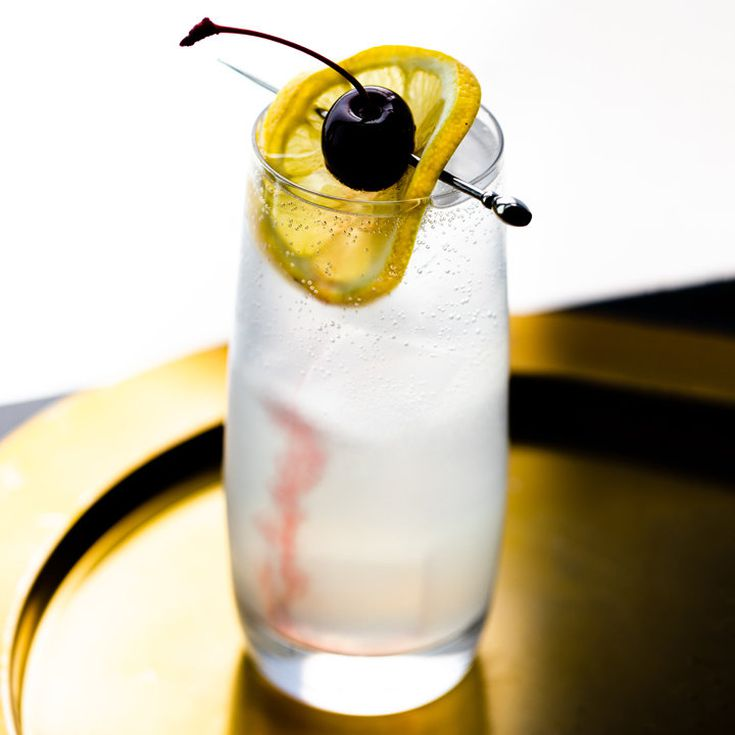
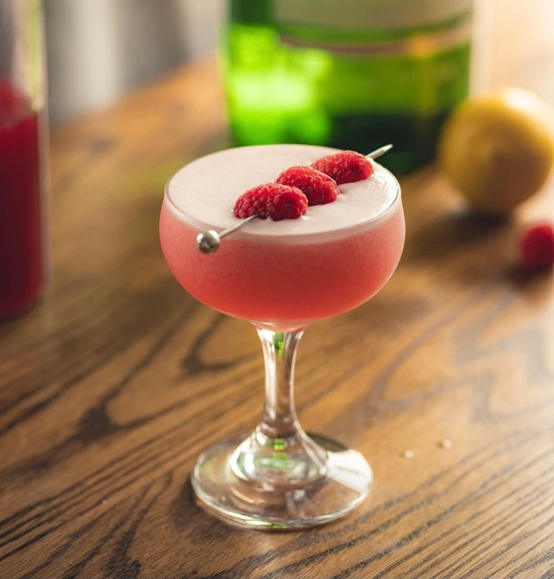

| 칵테일 이름 | 레시피 | 이미지 |
|---|---|---|
| 네그로니 Negroni |
드라이 진 - 30 ml (1 oz) 스위트 베르무트 - 30 ml (1 oz) 캄파리 - 30 ml (1 oz) |
 |
| 더비 Derby |
드라이 진 - 60 ml (2 oz) 피치 비터스 - 2 dashes 민트 잎 - 2 leaves 스터 |
 |
| 블루 문 Blue Moon |
진 - 2oz (60ml) 크렘 드 바이올렛 - 1oz (30ml) 레몬 주스 - 1/4oz (7.5ml) 물 - 1/2oz (15ml) 셰이크 |
 |
| 존 콜린스 John Collins |
진 - 45 ml (1 1/2 oz) 레몬 주스 - 30 ml (1 oz) 심플 시럽 - 15 ml (1/2 oz) 탄산수 - 60 ml (2 oz) 빌드 |
 |
| 클로버 클럽 Clover Club |
진 - 45 ml (1 1/2 oz) 레몬 주스 - 15 ml (1/2 oz) 라즈베리 시럽 - 15 ml (1/2 oz) 달걀 흰자 - Few Drops 셰이크 |
 |